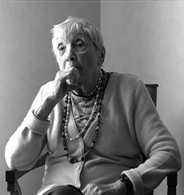

|
N’AVONS-NOUS PAS TOUJOURS ÉTÉ BIENVEILLANTS (RECUEIL) (Haven't we always been benevolent?) (Collection)
Pierre Creton, Vincent Barré | F 2010 | 117 min.
Material: DV
Format: Mini-DV
Original language: French
Camera: Pierre Creton
Editing: Pierre Creton, Vincent Barré
Sound: Vincent Barré
With Georges-Arthur Goldschmidt, Aline Cézanne, Deng Guo Yuan
Production: Pierre Creton, Fondation F.A.C.I.M, Musée Malraux
Print/Sales: Pierre Creton
German Premiere
On the photo: Aline Cézanne
A collection of 4 "portraits" which cross litterature, architecture, cinema, and painting. Short stories of the XXth century which lead us to this point of intimacy where life and creation mix, where survivals of images and nature meet, from childhood to old age, in a kind of benevolence, a will to dialogue.
First part: The landscape as a witness, meeting with Gerges-Arthur Goldschmidt Second part: Dad, Mom, Perret and myself, a witness-apartment
Third part:
Aline Cézanne
Forth part:
Deng Guo Yuan in the garden
Pierre Creton, born in 1966, works and lives as filmmaker, sculptor and milk inspector in Vattetot-sur-Mer. He studied sculpture at the Academy of Fine Arts in Paris.
Vincent Barré, born in 1948, lives and works in Paris and in Loiret as sculptor. He studied architecture in Paris and Philadelphia and travelled Europe, the United States and Asia. Since 1986 he teaches sculpture at the Academy of Fine Arts in Paris.
Films (P. Creton) (selection): 2010 Deng, in the Garden | 2009 Le paysage pour témoin, Papa, maman, Perret et moi | 2008 Maniquerville, L’heure du berger (UNDERDOX 03) | 2006 Paysage imposé | 2005 Le voyage à Vézelay | 2004 Secteur 545
Films together: 2010 Aline Cézanne | 2006 L’Arc d’Iris – Souvenir d’un jardin (UNDERDOX 02) | 2005 Détour suivi de Jovan from Foula (UNDERDOX 02)
back
|